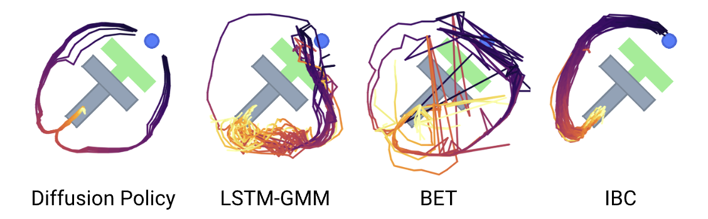

2023 · RSS · CHI ET AL.（COLUMBIA / TRI）
Diffusion Policy 精读
1. 问题：同一观测，为什么不止一种正确动作？
抓取、推动或绕行常有多条可行轨迹。单个确定性MSE回归头容易拟合条件均值，均值未必属于任何一条可行轨迹；这不是说所有行为克隆或所有回归模型都只能输出均值。Diffusion Policy学习观测条件下的动作分布，并一次生成未来一段动作。它仍是模仿学习：表达多模态，不等于自动解决分布偏移、失败恢复或安全控制。
2. 方法精读
2.1 在动作空间中学习条件去噪
令干净动作块为 $A^0$，观测特征为 $o$。常见噪声预测写法是 $A^k=\sqrt{\bar\alpha_k}A^0+\sqrt{1-\bar\alpha_k}\epsilon$，训练最小化 $\mathbb E\|\epsilon-\epsilon_\theta(A^k,k,o)\|^2$。推理从高斯噪声出发反向去噪，最后得到动作序列。这里的 $k$ 是生成过程的噪声步，不是机器人真实时间；视频中机械臂走出的曲线也不是这个高维去噪过程的投影。
网络输出与条件score存在参数化关系，可以用梯度场的视角理解；一般噪声预测网络不必显式来自一个可计算标量能量函数。DDPM与DDIM等采样器在随机性、步数与数值误差上不同，不能把所有扩散采样都叫必须走满训练步数的随机游走。

来源：Diffusion Policy 论文 · © Chi et al.
2.2 预测视界、执行视界与重新观测
先预测 $T_p$ 个动作，只执行 $T_a\le T_p$ 个，再采新观测重新生成。这就是receding horizon：动作块利用短期时间结构，重新观测提供反馈。还要区分观测历史长度 $T_o$，不要把它与执行步数混用。较长执行前缀节省调用，但反馈更旧；较短前缀响应更快，计算与块间衔接压力也更大。
来源：DP 官方项目页 · © Chi et al. · 原始文件
点击播放，可暂停、拖动进度或全屏；本站不自动播放，也不额外加速。
2.3 视觉条件与两种动作网络
作者给出时序卷积U-Net与时序Transformer方案，分别用相应条件化结构接入观测。一次动作生成中的观测不变，可缓存视觉特征供多个去噪步使用。图像编码、空间特征提取、归一化、EMA与动作控制模式都会影响结果；减少去噪步数后，应重新测成功率和闭环时延，而不是只报告一次前向变快。
3. 多模态的实证：不要把两种推动任务混在一起
Push-T是把T形块推到目标位姿；Multimodal Block Pushing使用不同的对象/目标组合检验多种行为模式。它们不是同一个基准。下面保留作者的对比图与官方仿真动画；这些分布与rollout比“画两条漂亮曲线”更接近论文的证据。

来源：作者项目仓库 · © Chi et al.
来源：DP 官方项目页 · © Chi et al. · 原始文件
点击播放，可暂停、拖动进度或全屏；本站不自动播放，也不额外加速。
4. 结果与消融：先固定论文版本
本页采用RSS 2023与官方项目页的口径：12个任务、4类基准，作者报告平均相对改进46.9%。这是相对既有方法的汇总比较，不是“提高46.9个百分点”，也不是任意任务的保证。后续IJRR版本扩展了实验，不应把不同版本的任务数、平均成功率和最优checkpoint混成同一结论。
5. 局限与研究者注记
复现时先固定：动作是位置还是速度、观测/预测/执行视界、噪声调度、采样器和训练数据。若研究加速，报告采样步数—成功率—尾延迟曲线；若研究鲁棒性，单独设计扰动与恢复评测。DP本身不引入语言条件，也不能仅凭多模态表达能力推断长程规划或安全性。
6. 从数据张量开始：模型到底预测什么？
把一个训练样本写成 $(O_t,A_t)$：$O_t$ 包含截至物理时刻 $t$ 的观测历史，$A_t$ 是对应的示范动作窗口。策略不是先预测未来RGB再从RGB解出动作；条件扩散直接在动作块上进行。判断代码是否对齐，先查看数据加载器返回的窗口，而不是先看网络层数。
| 对象 | 常见形状 / 符号 | 实现时要核对 |
|---|---|---|
| 状态观测历史 | $B\times T_o\times D_o$ | 最后一帧对应哪个动作时刻；是否把未来状态泄漏进条件 |
| 单路RGB历史 | $B\times T_o\times3\times h\times w$ | 相机时间戳、裁剪和增强；多相机另有视角维 |
| 动作窗口 | $B\times T_p\times D_a$ | 位置/速度、绝对/相对、旋转表示与单位 |
| 噪声与预测 | 均与动作窗口同形 | 噪声步 $k$ 的广播，以及有效维/序列边界mask |
$D_a$ 是每个控制点的维数，不是动作token数。比如一个二维推动任务可以用未来若干个 $(x,y)$ 目标表示动作；这与逐步预测二维速度的含义不同。两种表示即使形状一样，也不能直接共用反归一化和控制器。
还有一个经常被忽略的切片：某些数据集窗口把与观测历史重叠的动作也放进预测块。若动作窗口从 $t-T_o+1$ 开始，那么面向未来的执行切片应从偏移 $T_o-1$ 开始。必须按数据定义找切片，不能默认拿预测数组的第0项就发给机器人。
7. 从噪声预测损失到反向采样
定义单步保留系数 $\alpha_k=1-\beta_k$，累积系数 $\bar\alpha_k=\prod_{j=1}^{k}\alpha_j$。前向加噪公式把许多次噪声扰动合并成一次可直接采样的变换。训练时可以随机挑一个 $k$ 就得到监督，不必先把整条扩散链跑完，也不必在每次梯度更新中反向展开所有采样步。
在常用DDPM噪声参数化下，反向均值可写为 $\mu_\theta=\frac{1}{\sqrt{\alpha_k}}\big(A^k-\frac{\beta_k}{\sqrt{1-\bar\alpha_k}}\epsilon_\theta(A^k,k,O_t)\big)$，随后采样 $A^{k-1}=\mu_\theta+\sigma_k z$。这里 $z$ 为标准高斯噪声，$\sigma_k$ 由采样器规定；末步等特殊情况也应遵循具体调度器，而不是每一步都随意叠噪声。
教学算例：只检查一个动作分量
为什么训练目标是噪声，而不是直接把所有输入回归成一个动作？对每个噪声状态，模型学习如何回到观测条件下的动作分布；推理时不同初始噪声允许生成不同可行动作块。噪声预测仍使用平方损失，但它回归的是噪声状态下的局部生成方向，不等同于一个从观测直接输出动作均值的确定性头。
减少推理步数时，不能只是删掉循环里的若干行更新。DDIM等采样器会按选定的时间网格和调度重新计算转换；保持训练噪声日程一致与保持推理步数一致，是两件不同的事。原方法设计见 论文II节；扩散参数化的基础可对照 DDPM原论文 与 DDIM原论文。
8. 一次训练更新与一次闭环执行
训练：窗口 → 加噪 → 预测 → 更新
- 从同一episode抽取对齐的观测/动作窗口，按训练统计归一化动作；处理序列头尾和缺失维。
- 随机采样噪声步和与动作块同形的高斯噪声，直接构造带噪动作。
- 提取观测特征，输入带噪动作、噪声步与条件，预测噪声。
- 对有效元素计算损失，反向更新；若采用EMA，评测时确认加载的是EMA参数还是在线参数。
执行：新观测 → 完整采样 → 只执行前缀
- 采集并同步当前观测，构造与训练相同长度/语义的条件。
- 只编码一次这组固定观测，从高斯动作块开始，按采样器做多步更新。
- 反归一化，选取正确的未来动作切片，交给既定控制接口。
- 执行 $T_a$ 个控制点后重新采集观测，再生成下一块；不要把采样步计数当执行计数。
若采样耗时为 $L$、执行频率为 $f$，同步实现中这次观察在第一条动作发出时已至少老了约 $L$，执行后续前缀时还会继续变旧。因此即使动作块内部很平滑，也可能对突然移动的物体反应迟缓。视觉缓存降低本次生成成本，但不能让下一轮沿用旧条件还被算作“新反馈”。
9. 可以直接落地的复现与消融
研究建议，不是新增实验结果。 先在同一数据、视觉编码器和控制接口上拿到基线，再一次只改变一个轴。下面每一行都应同时记录任务结果与运行时，而不是只看训练loss。
| 研究轴 | 控制变量 | 重点观察 |
|---|---|---|
| 采样步数 | 同一checkpoint、相同初始条件与采样器族 | 成功率、接触精度、p50/p95/p99采样延迟 |
| 执行前缀 | 固定预测视界与采样预算，改变 $T_a$ | 扰动恢复、块间跳变、重规划次数 |
| 动作网络 | CNN与Transformer尽量匹配容量/预算 | 快变动作是否过度平滑；不能只比参数数 |
| 动作表示 | 重新核对数据转换与低层控制器 | 位置/速度与旋转表示的误差传播 |
数据划分以episode为基本单位；同一段演示相邻窗口高度相似，随机按窗口切分会夸大验证表现。涉及未见物体或场景时，还要在对象/场景层面划分，不能仅靠随机种子就把测试称作分布外泛化。
10. 怎样读图、看动画并形成研究问题
回看上面的输入输出图，先用手标出 $T_o,T_p,T_a$；再播放Push-T视频，找出真实末端、预测动作点和重新预测的时刻。暂停在块切换附近，问“这是控制器造成的平滑、动作块自身一致，还是频繁闭环校正？”这三种机制需要不同消融，不能从一段视频中自动分离。
多模态实验则问两个问题：跨rollout有没有覆盖不同有效模式？单个rollout有没有在相互冲突的模式之间反复跳变？ 前者是覆盖，后者是时间一致性。一个方法可以有很好的单次演示，却覆盖不足；也可能采样很多模式，却在闭环时频繁切换。
读完后应能回答：网络一次输出的张量是什么？训练为什么不跑完整反向链？预测块哪一段真正执行？减少采样步和缩短执行前缀分别改变什么？如果只能答“扩散更适合多模态”，还没有读到可复现的层次。
11. 从高斯条件分布推导score：噪声头究竟学到了什么
先暂时固定一条干净动作 $A^0$。带噪变量的条件分布是均值为 $\sqrt{\bar\alpha_k}A^0$、方差为 $(1-\bar\alpha_k)I$ 的高斯。对其对数密度关于 $A^k$ 求梯度，得到 $\nabla_{A^k}\log q(A^k\mid A^0)=-\epsilon/\sqrt{1-\bar\alpha_k}$。这一行把“预测噪声”与“学习密度变化方向”联系起来，但它目前仍是给定干净样本的条件score。
部署时没有真值 $A^0$。把训练配对在当前带噪点和观察条件下取后验平均，得到边缘score：$s_k(A^k,O)=\mathbb E[-\epsilon/\sqrt{1-\bar\alpha_k}\mid A^k,O]$。平方损失的噪声头正好回归这个条件期望对应的噪声。因此“用了MSE”并不能推出策略只会生成观测下的单一平均动作；网络的输入还包含不同带噪位置与噪声级别。
反过来，模型表达多模态也不保证每次都选对任务模式。语义条件不明确、数据模式频率不平衡、采样步不足，都可能影响最终样本。应把“动作分布可表示”与“闭环任务可完成”分成两个需要证据的命题。
误差在不同噪声级别如何放大？
由干净动作重建式可得 $\Delta\hat A^0=-\sqrt{(1-\bar\alpha_k)/\bar\alpha_k}\,\Delta\epsilon$。这是固定输入下、忽略后续采样反馈的代数误差传播。教学设定中，$\bar\alpha=0.01$ 的放大系数约 9.95，而 $\bar\alpha=0.81$ 时约 0.48。相同噪声误差不一定对应相同动作误差，按噪声时间分桶看loss往往比只看一个全局均值更有解释力。
以上是基于 DDPM参数化 的教学推导，不是DP新增消融。真实采样还会反复更新并受网络误差相关性影响，不能把单次系数直接解释成最终成功率的比例。
12. DDIM跳步怎么算：不是把DDPM循环删掉九成
设下一次反向更新选择更低噪声的索引 $j<k$，先计算 $\hat A^0=(A^k-\sqrt{1-\bar\alpha_k}\epsilon_\theta)/\sqrt{\bar\alpha_k}$。广义更新可拆成三项：$A^j=\sqrt{\bar\alpha_j}\hat A^0+\sqrt{1-\bar\alpha_j-\sigma^2}\epsilon_\theta+\sigma z$。第一项给出数据估计，第二项保留该噪声级别的方向，第三项控制额外随机性。
确定性DDIM令 $\sigma=0$；其他设置要根据索引对与随机性参数计算方差，不能把同一个DDPM单步系数直接用于任意跨度。训练时间网格与推理时间子序列可以不同，但每一步查到的累积噪声系数必须对应正确的原始索引。配置中的“10步”本身不足以确定这张时间表。
“确定性”指固定条件、固定初始噪声和固定数值设置后的映射。不同初始噪声仍能产生不同动作；每轮闭环重新采样也仍可能切换行为模式。若复现实验把所有噪声种子锁成同一个值，只能说明那一条生成路径，不能据此证明多模态覆盖。
阅读 DDIM第4节及附录的跳步公式 时，还要确认原文的 $\alpha$ 是否已经表示累积量。本页统一使用带横线的 $\bar\alpha$，避免把单步保留率与累积保留率混用。
13. 条件U-Net逐层阅读：时间轴、FiLM与残差连接
时序U-Net把动作块当成一维时间信号处理，不是在RGB平面上对机器人轨迹做图像修补。常见外部形状为 $B\times T_p\times D_a$，进入Conv1d前调整为 $B\times D_a\times T_p$。下采样扩大时间感受野，上采样恢复长度，skip connection保留不同尺度的特征。预测长度与下采样结构不兼容时，错误可能先表现为拼接维度不一致。
噪声时间经正弦编码和MLP，观察特征则构成固定条件。条件残差块可以由这两类信息生成逐通道缩放与偏置，示意为 $h'=\gamma(c)\odot h+\beta(c)$；同一个通道的调制沿动作时间轴广播。另一些配置只加偏置。不能仅从“FiLM”这个名字推断一定同时训练了缩放和偏置。
来源：Diffusion Policy 论文 · © Chi et al.。沿用原文件，未重绘。
对应 作者固定版本ConditionalResidualBlock1D，先检查 cond_predict_scale，再核对输入通道、条件维与残差投影。global_cond意味着该观察条件服务于本次整块生成，不代表网络看到了完整未来观察；局部条件和全局条件也不是随意互换的参数名。
可执行的离线检查： 打印每级张量形状；对一个batch固定噪声，分别改变观察和噪声时间，确认输出确实随两者改变；再检查条件梯度是否存在。输出变化只证明计算通路连通，尚不能证明条件被正确理解。若想比较“动作更平滑”，同时检查快速接触切换是否也被过度平滑。
14. 视觉编码不是附件：空间信息、增强与归一化层
视觉策略依赖“在哪里”，全局平均池化可能把定位所需的空间差异弱化。原DP视觉配方采用空间特征提取，并讨论将BatchNorm替换成GroupNorm、与EMA一起使用的训练稳定性；这些是 论文III-B节 的具体设计，不是所有机器人视觉网络的统一规范。公开实现还存在配置开关，因此论文描述、构造函数默认值和实际运行配置要分别记录。
BatchNorm的批统计、运行统计与模型参数不是同一种状态。训练batch混合了不同时间或相机分布时，部署单样本看到的统计条件可能不同；EMA又可能与统计缓冲的处理方式相互作用。GroupNorm不依赖同一个batch中的其他样本，但也有组数和通道配置，不能解释成“归一化问题已经彻底消失”。
历史图像增强要保持什么一致？
假设相机本身静止、物体也没动，但相邻历史帧被分别随机裁到不同区域，编码器可能读到人为的相对位移。是否需要让时间窗口共享裁剪参数，取决于任务、训练配方与网络是否使用运动线索。正确做法是把这一选择写进实验，而不是把任意图像增强默认视作物理上合理的观察变化。
多相机还要核对视角顺序、可见性和采集同步。换一台相机只保留同样分辨率，并不保持内外参、曝光或机器人遮挡模式。遇到“验证集很好、真机抓偏”，先用日志逐帧叠加原图、处理后图和目标位置；在进入策略网络之前就应能发现裁剪坐标错误。
一个有用的研究分解是固定动作网络，依次比较视觉增强、空间池化和归一化层；把编码耗时与动作专家耗时分开测。这样才能知道收益来自更好的空间条件，还是仅来自更大的训练预算。
15. 归一化与几何：同样的MSE并不代表同样的物理代价
设每维动作按 $z_d=(a_d-\mu_d)/s_d$ 标准化。归一化空间的平方误差等于物理空间中按 $1/s_d^2$ 加权的误差；所以统计量不仅改变数值范围，也改变各维的相对优化权重。平移、旋转、夹爪通道的单位不同，未经处理的大数值通道可能主导loss；处理后也不意味着所有维具有相同的任务敏感度。
如果采用范围映射，应明确范围来自最值、分位数还是预先定义的物理边界；只用训练数据拟合统计。分位数之外的样本可能得到超出目标区间的值，是否裁剪会改变重建与尾部分布。常量维的尺度接近0时，要使用明确的退化处理，而不是让除法生成极大值或NaN。
旋转的欧氏误差需要特别小心
四元数 $q$ 与 $-q$ 表示同一旋转；若不做符号一致处理，直接MSE可能把等价姿态看成很远。连续6D旋转表示需要解码到正交旋转矩阵，其原始向量误差也不是物理转角。不同表示各有边界情况，不能把某一论文配置推广成所有平台都应使用同一种旋转维度。
部署中还要区分关节目标、末端目标、速度与增量。一个0.01的平移增量若以不同频率反复执行，会改变单位时间运动量；绝对目标则没有相同的累积含义。因此修改数据频率后，只调整时间戳、不检查动作转换，可能让看似一致的训练目标产生完全不同的物理行为。
最小验证： 从真实示范抽几帧，验证 normalize→inverse 还原；检查旋转解码有效性和夹爪方向；对mask之外的维做一致处理；最后才比较模型loss。所有这些都可以先离线完成，不需要靠未验证的真机试动作来猜接口。
16. 数据窗口手工验算：历史、预测与执行切片
教学设一个episode有8个时刻，观察历史 $T_o=2$、预测窗口 $T_p=4$、执行前缀 $T_a=2$。若当前时刻 $t=2$，历史观察为 $[O_1,O_2]$，并约定动作预测窗口从历史起点开始，则动作标签为 $[a_1,a_2,a_3,a_4]$。对应当前及未来的执行切片是数组位置1和2，也就是 $[a_2,a_3]$，不是 $[a_1,a_2]$。
作者某些策略实现正使用类似的 start = To - 1 切片；见 固定版本predict_action。但若另一个数据管线把动作窗口直接定义为从当前时刻开始，同样的偏移就会错。真正的规则来自标签的时间语义，不是“所有DP都必须减1”。
| 要检查的位置 | 教学窗口 | 可能出现的错误 |
|---|---|---|
| 历史末端 | $O_2$ 是当前观察 | 把 $O_3$ 放进输入，形成未来泄漏 |
| 预测起点 | $a_1$ 与历史起点对齐 | 误以为数组第0项就是当前动作 |
| 执行前缀 | 选择 $a_2,a_3$ | 重复执行过去动作，表现为持续滞后 |
| 下次闭环 | 重新观察并重新切窗 | 只是平移旧动作，却仍标成新预测 |
到episode头尾还要决定如何补齐。复制边界动作、补零和对填充位置mask，各自对应不同训练分布；重复最后动作并不对所有控制模式都等于“保持不动”。如果引入额外mask，也要确认损失分母只统计有效元素，否则长短episode的权重会悄悄变化。
建议把几个真实窗口连同原始时间索引导出，人工核对一次。这个成本通常远低于先训练很久，再把固定时间偏移错误误判成模型容量不足。
17. 多模态与时间一致性：覆盖好不等于闭环不犹豫
考虑左右两条有效绕行模式。固定观察下重复采样，能覆盖两边，说明条件分布具有多样性；机器人沿左边走了几步后又重新生成右边动作，则可能在闭环中反复横跳。前一个问题是跨样本的模式覆盖，后一个问题是同一次任务中的承诺与反馈一致性，它们不应只由一张散点图共同评价。
动作块提供了一段共享生成的时间结构，却不自动约束下一块必须延续上一块。在最新观察足以消除歧义时，模式切换可能自然减少；若观察不完整，重复采样种子、历史条件和动作块接续方式可能显著影响行为。固定种子、warm start或重叠约束都是可研究的系统设计，不应未经说明写成原DP的必需组成。
怎样把两个问题分别测出来？
- 固定同一观察，多种噪声种子生成完整动作块，统计有效模式比例与离群动作，不执行。
- 在闭环仿真中固定初始状态，记录每轮生成与实际执行轨迹，统计无外部扰动时的反复换边。
- 施加预先定义的环境变化，再判断模式切换是合理恢复还是无效犹豫；不能把所有切换一概视为错误。
- 改变执行前缀与观察历史，区分“新条件不足”与“每次采样不连贯”。
还要谨慎使用轨迹平均。若两条可行路径中间是障碍物，均值轨迹可能不可行；但把多次rollout画在一起也不意味着单次策略正在执行均值。可视化应分别展示样本、实际执行与统计汇总，不能用一种线型把三个对象混在一起。
这个分析同样适用于后面的flow策略：生成器是否随机、是否多模态，与闭环是否会在模式之间抖动，是相关但不等价的设计问题。
18. 成功率的统计口径：种子、checkpoint与置信区间
研究复现时至少分开训练种子、采样种子和环境初始条件种子。训练种子改变学到的策略，采样种子改变同一策略的生成样本，环境种子改变要解决的问题。只对一个checkpoint大量改变采样种子，不能估计训练方法本身的稳定性。
checkpoint选择规则同样重要：用验证集选模型，测试集只用于最终报告。若先看测试成绩再挑最好的训练轮次，最终均值会偏乐观；比较方法时，一个报最优checkpoint、另一个报最后checkpoint，也不是同一种协议。
多任务评测还要说明宏平均还是按尝试数量加权。若简单任务做100次、困难任务只做10次，直接合并所有成功次数会给前者更高权重。长程任务的进度、全任务成功与耗时应分别汇总，不能在同一列里混合。
实际数据若按场景、操作者或episode成组，bootstrap也应考虑在相应组层面重采样，而非把同一轨迹的每帧当成独立证据。区间估计的基本定义可参见 NIST比例置信区间说明。此处提供的是统计阅读方法，不替代原论文的完整实验协议。
19. 失败诊断手册：先验证哪一层
一个有效诊断顺序是：数据能否还原 → 单batch能否过拟合 → 条件是否连通 → 采样器能否完成简单代数检查 → 离线动作是否合理 → 闭环是否对齐。顺序不是为了证明网络一定没问题，而是先排除会污染所有后续比较的接口错误。
| 现象 | 优先检查 | 不要过早归因 |
|---|---|---|
| 输出几乎常量 | 输入是否全被mask、归一化是否退化、条件梯度是否存在 | “扩散天然只能平均” |
| 训练loss低，rollout滞后 | 动作切片、观察时间戳、采样耗时与执行前缀 | “视觉理解能力不足” |
| 少步采样突然失效 | 时间索引、scheduler系数与最终预测类型 | “必须换更大模型” |
| 换环境后持续抓偏 | 相机处理、坐标契约、动作统计与低层控制模式 | “训练数据只需再翻倍” |
单batch过拟合只能证明局部优化与数据通路有能力拟合那一小批样本，不是泛化证据；离线动作误差低也不保证闭环稳定。每一层检查都有清晰的作用边界，避免把一个局部通过项包装成完整复现成功。
建议最小日志包含 episode_id、物理观察时间、窗口起止索引、噪声级别、采样器/步数、原始与归一化动作范围、执行切片和真实执行时间。若只能拿到最终成功视频，通常无法追溯是模型、调度还是数据转换造成了差异。
真机阶段只应使用已验证的动作契约、限幅与系统回退协议；排障实验优先在离线回放或仿真中进行。这里没有提供可直接绕过硬件安全机制的控制程序。
20. 可复现课题：采样预算与执行视界如何共同影响反馈
研究假设： 少步采样可能降低观察陈旧度，但如果生成质量损失过大，缩短调用时间不一定改善闭环任务。这个假设要同时改变采样预算与执行前缀来验证，不能仅看离线forward时间。
| 设计项 | 预先约定 |
|---|---|
| 基线与实验组 | 同一checkpoint、数据与控制接口；选两档采样步数、两档执行前缀，形成4组 |
| 评测条件 | 共享初始状态集合与扰动脚本；若研究训练改动，再增加独立训练种子 |
| 主要指标 | 成功率/进度、p95与p99调用时延、观察年龄、恢复时间和块间跳变 |
| 失败判据 | 碰撞、超时、任务未完成和系统回退分别记账，不只删除失败rollout |
| 交付物 | 固定配置、checkpoint、逐episode原始记录、聚合脚本与未剪辑失败样例 |
计算预算要记录实际采样调用次数：短前缀会增加调用，即使单次更快，总GPU时间也可能更高。建议同时画任务效果—端到端时延和任务效果—总计算两条曲线；它们回答的工程问题不同。
若所有组都失败，应回到接口与数据诊断；若只有扰动任务有收益，应报告这种条件性结论，而非称为通用加速。若发现较长执行前缀更稳定，也要检查是否因为短前缀引入了模式切换。
这是待执行的研究方案，不是本站已经跑出的结果。最终应该能回答：在明确的任务分布和预算下，哪一部分时间花在生成，哪一部分损失来自陈旧反馈，结论在哪些条件下不再成立。
参考：RSS 2023论文版本 · 官方项目与动态素材 · 作者实现。